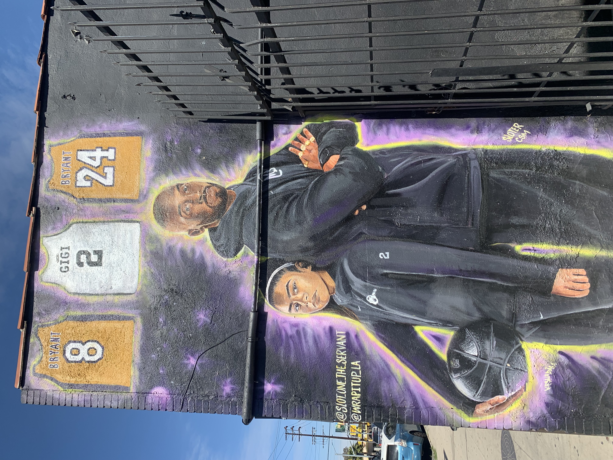
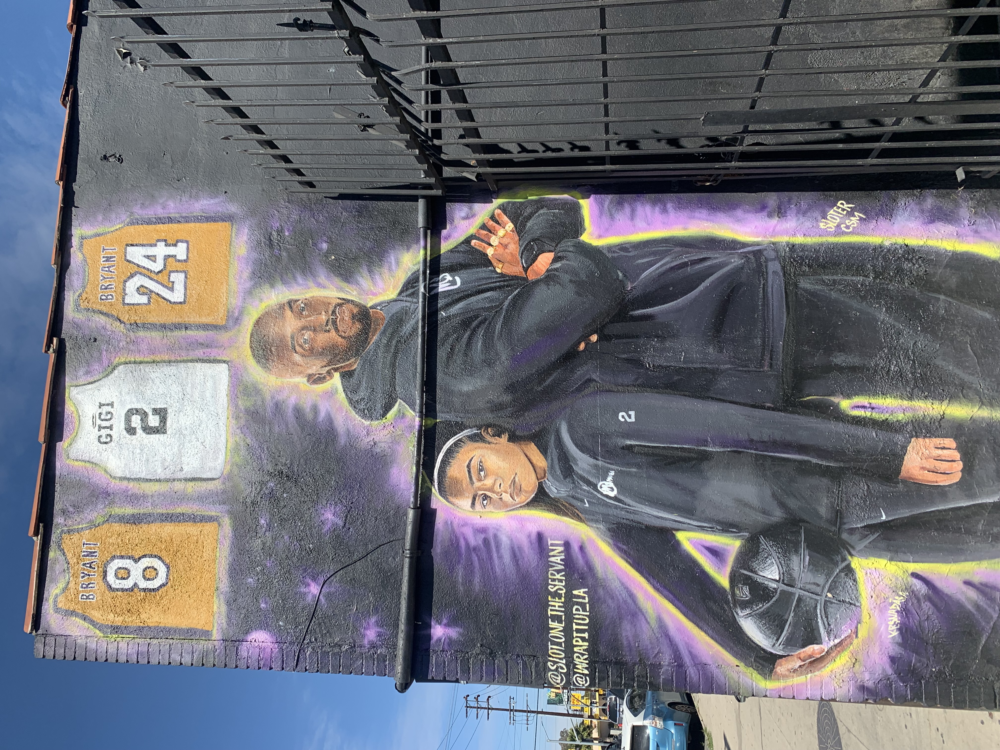

6th Street and San Julian Street
Somewhere most people wouldn’t expect to find great art, this Skid Row mural was voted as the best new street art piece in LA a few years ago. This area of LA has one of the largest homeless populations in the whole city. One aspect that makes this piece so special is that it is created solely by residents of skid row. This work is personal and is communicating a message for everyone to see.
 
5791 Obama Blvd, Los Angeles
Some street artists don’t credit their work, but that does not diminish the power of their art. Driving through downtown LA, this large mural caught my eye, I couldn’t help but pull out my phone at a red light and take a photograph. Kobe Bryant and Nipsey Hussle are icons to millions around the world and heroes to anyone in the city of LA.
Nipsey was committed to lifting the people of South LA up. He was a light for the youth and anyone struggling reach their dreams. His impact is far reaching and long from being forgotten shown by the hundreds of murals around the city celebrating his life and words.
For those who grew up in Los Angeles, Kobe’s passing felt like an unimaginable loss. His impact went beyond basketball and the city continues to ride for and celebrate one of their greatest heroes. This beautiful, detailed piece portrays two people who are LA culture.
Santa Monica, California
Art is used as a celebration for diversity, an understanding that the different people, foods, ethnicities, and cultures are the beauty and the strength of the city.